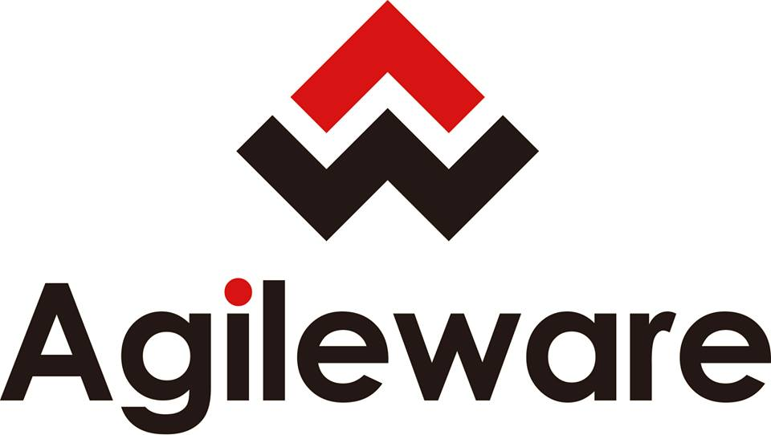
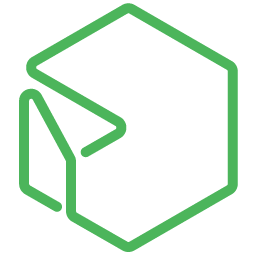
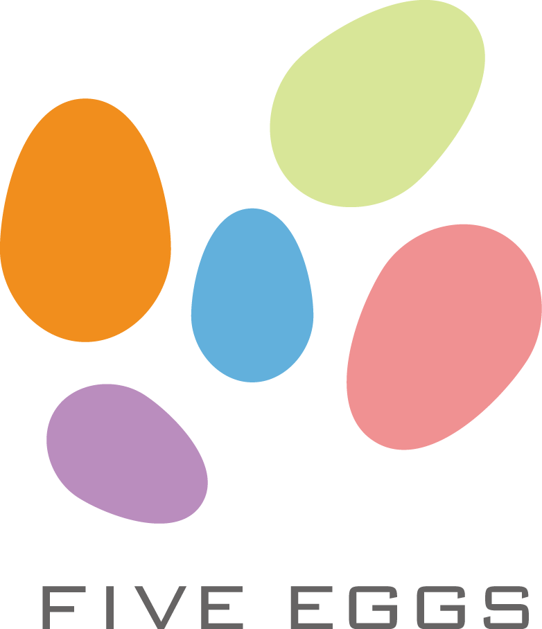

こんにちは世界！
Rails Girlsが、初めて神戸にやってきます！
二日間のワークショップの間に、Ruby on Railsのすてきな世界を体験してみませんか？ワークショップは無料です。
現在、開催準備中です！ 告知はこのページで行いますので、お楽しみにお待ち下さい！
Hello world!
Rails Girls comes to Kobe! During the free two-day workshop we'll dive into the magical world of Ruby on Rails.
概要 コーチに教えてもらいながらプログラムを設計して、プロトタイプを作り、コーディングします。
必要なもの 自分のノートパソコン、やる気とキラリと光るイマジネーションを持ってきてください！
| 18:00開場 ～ |
インストール・ディまずは、参加者同士、お互いに知り合いになりましょう。ご自分のノートパソコンをお持ちください。 それぞれのパソコンにRubyとRailsをインストールし、Rubyプログラミングの最初の一歩をコーチとともに始めてみましょう。 |
|---|
| 9:30 - 10:30 |
レジストレーション、コーヒー金曜日にRuby on Railsのインストールトラブルがあれば、朝のうちに解決しておきましょう。 金曜日にすべてうまく行ったひとは参加しなくてもOKです。 |
|---|---|
| 10:30 - 10:45 |
開会一日の流れの説明。オーガナイザーから一言。 |
| 10:45 - 12:30 |
ワークショップ |
| 12:30 - 13:30 | ランチ |
| 13:30- 14:00 |
ライトニングトークス |
| 14:00 - 16:30 |
ワークショップ |
| 16:30 - 18:00 頃 |
アフター・パーティ参加者、コーチ、スタッフによるパーティです。ワークショップで聞き損ねたことや RubyやRailsのこと、ステップアップの方法など、コーチに気軽に質問してみましょう。 |
参加申し込みページ
参加申し込みは締め切らせていただきました。
多数のお申し込み、ありがとうございました！
日程:
2015年9月11日(金) 18:00開場 ～
2015年9月12日(土) 9:30開場 ～
会場:
神戸市立会館勤労会館
市営地下鉄・JR・阪急・阪神・ポートライナー各三宮駅から東へ徒歩5分
Rails Girls Kobe はすばらしいパートナーとの共同開催です。
 Kobe.rb は神戸やその周辺のRubyistが集まる地域コミュニティです。神戸を中心に Ruby, Rails などの情報を共有したり、初心者フォローの勉強会を運営しています。隔週平日開催しています。Ruby, Railsなどで困ってる事を相談しあったりしたい人。Ruby初級者で勉強したい人などなど。ぜひこの場を活用してください。
Kobe.rb は神戸やその周辺のRubyistが集まる地域コミュニティです。神戸を中心に Ruby, Rails などの情報を共有したり、初心者フォローの勉強会を運営しています。隔週平日開催しています。Ruby, Railsなどで困ってる事を相談しあったりしたい人。Ruby初級者で勉強したい人などなど。ぜひこの場を活用してください。
 株式会社spice lifeはECを通して世の中に笑顔を増やすサービスを作ります。spice lifeで開発するのはECの分野、ちょっと変わった、ちょっと新しい、ちょっと世の中を良くするようなECです。もちろんRailsで開発しています。オリジナルTシャツ作成サービスtmixは各地のRailsGirlsのスタッフTシャツ作成もしています。
株式会社spice lifeはECを通して世の中に笑顔を増やすサービスを作ります。spice lifeで開発するのはECの分野、ちょっと変わった、ちょっと新しい、ちょっと世の中を良くするようなECです。もちろんRailsで開発しています。オリジナルTシャツ作成サービスtmixは各地のRailsGirlsのスタッフTシャツ作成もしています。
 GitHub はソフトウェアの共同開発をするための最高の環境を開発・提供しています。1000 万人以上のユーザーが友だち、同僚、クラスメートと、時にはまったく知らない人とでさえ、コードなどを共有して素晴らしいプロジェクトを行っています。
GitHub はソフトウェアの共同開発をするための最高の環境を開発・提供しています。1000 万人以上のユーザーが友だち、同僚、クラスメートと、時にはまったく知らない人とでさえ、コードなどを共有して素晴らしいプロジェクトを行っています。
Kumu Inc. 思い入れのある製品を生み出す時、時間をかけて成熟した完全な状態で世の中に出そうとしていませんか？小さく生み出して、早く使用してみて、利用者のフィードバックをもとに着実に育てていく、それがこれからのビジネスの一つの形ではないでしょうか？そんな皆様とチームを組み、一緒に「生み出し×育てる」パートナーとなりたい。それが、私たちKumuの思いです。
 日本Rubyの会は、Rubyの利用者の支援とRuby(とRubyのライブラリ)開発者の支援を目的とした一般社団法人です。
現在は、ドキュメントの整備や、イベントへの参加協力等を中心に活動しています。
日本Rubyの会は、Rubyの利用者の支援とRuby(とRubyのライブラリ)開発者の支援を目的とした一般社団法人です。
現在は、ドキュメントの整備や、イベントへの参加協力等を中心に活動しています。
株式会社アジャイルウェア は、アジャイル開発により価値を素早く提供する、Rubyのスペシャリストが集まる会社です。100%自社内でRuby on RailsによるWebシステム開発を行っています。Rails製プロジェクト管理ツールRedmineのプラグイン開発や販売も拡大中です。お客様満足だけでなくエンジニア満足も重視していて、エンジニアが最も働きやすい時間帯で仕事ができ、適材適所に努めています。
合同会社ユーキューブ は、
株式会社アルメディア・ネットワーク では技術者集団として開発・インフラネットワーク・医療情報の3分野にて顧客満足を私達の存在価値として日々業務に努めています。2010年よりRubyの取組を強化し、関西地方で”Rubyビジネス推進協議会”設立・運営に寄与貢献しています。そして今後はRubyコミュニティと一緒に成長して行きたいと考えています。
合同会社ファイブエッグス 関西のRubyコミュニティ育ちの会社です。Ruby on Railsを利用したWebアプリケーションによって、皆様の仕事や生活をより豊かにしていきます。 iPhone/iPadアプリケーションとの連携もお任せください。
さくらインターネット株式会社 は、「さくらのレンタルサーバ」「さくらのVPS」等のホスティング事業やデータセンター事業を国内で展開しています。また、2011年には石狩にデータセンターを建設し、クラウドサービス「さくらのクラウド」をリリースしました。これらサービスの提供を通じ、インターネットによりひらかれる創造性と驚きに満ちた未来の実現に貢献していくことをミッションとしています。
参加費はどのくらいかかりますか？ 無料です。申し込むときにはわくわくした気持ちだけあればいいです。
どのような人が参加するのでしょうか？ コンピュータを使ったことがある女性ならだれでも参加できます。 これまでに開催されたRails Girlsイベントには様々な年齢の女性がやってきました。 ご自分のノートパソコンをお持ちください。
男性も参加できますか？ 参加できます。ただし、必ずウェブアプリを作りたがっている女性と一緒に参加してください。 申し込み人数が多い場合はお断りすることがありますので、ご了承ください。
 Mika Tanaka
Mika Tanaka Aki
Aki Yoshito Tanaka
Yoshito Tanaka yamasy
yamasy Tatsuya OGI
Tatsuya OGI むらじゅん
むらじゅん Keiko YADA
Keiko YADA  Tomohiro Nishimura
Tomohiro Nishimura KAJIHARA
KAJIHARA なかにしゆう
なかにしゆう yohm
yohm Yuya Kato
Yuya Kato maki
maki higaki
higaki